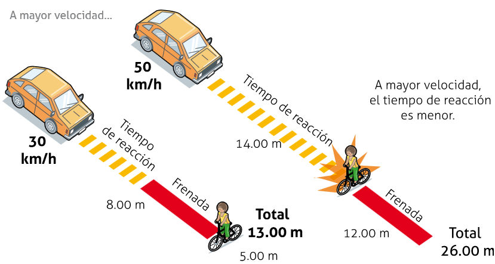
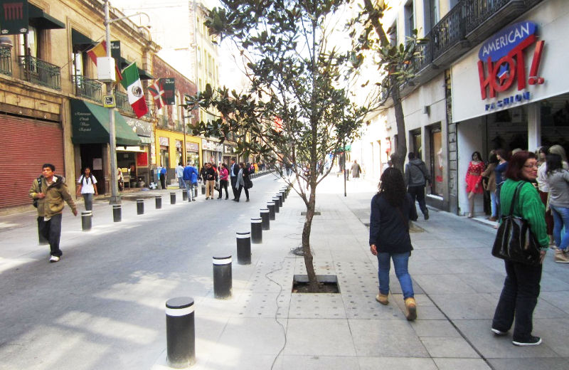

En las primeras décadas de la invención del automóvil, la sociedad estuvo renuente a aceptar los beneficios que éste proporcionaba ya que en sus inicios el uso estaba limitado sólo para la clase alta que era quien podía costear esta nueva herramienta. Por otro lado era conocido como un aparato nocivo y peligroso para la salud pública, ya que en ese tiempo la gente no estaba preparada para este tipo de maquinaria. Con el paso del tiempo y debido al crecimiento de la ciudad, esta se adaptó cada vez más al uso del automóvil como un transporte rápido y eficaz para trasladarse a grandes distancias.
Desde entonces la percepción del vehículo motorizado como un aparato inaccesible y peligroso, cambió a una herramienta de utilidad, de la cual la mayoría hacemos uso. Actualmente es más fácil acceder (económicamente) a éste (ya no es exclusivo de la clase alta). También, a través de su producción en serie y comercialización, se propició una derrama económica, generando miles de empleos e incentivando al comercio, lo que potencializó su uso.
La ciudad, como resultado, comenzó a adaptarse generando carreteras amplias, desniveles, puentes y estacionamientos para la comodidad y facilidad de quienes cuentan con automóvil. Sin embargo, en las últimas décadas ha aumentado la inquietud sobre el calentamiento global, además de la consternación que genera el crecimiento del parque vehicular y su uso desmedido, lo que provoca un impacto ambiental, social, y económico; en consecuencia, se disminuye la calidad de vida de quienes habitan la ciudad.
El uso masivo del automóvil se debe a diferentes factores. Partiendo de que el individuo se ve en la necesidad de contar con uno por el aumento desmedido de la mancha urbana y la necesidad de recorrer distancias más largas. Además; la falta de infraestructura vial adecuada, como las ciclovías, dificultan otras alternativas de movilidad, como usar la bicicleta.
Por otra parte, no se ha considerado que el uso desmedido del automóvil genera rupturas del espacio urbano y con ello, de las relaciones sociales (Appleyard 1981). Según un estudio realizado en San Francisco California, se demostró que la convivencia social disminuye en medida que crece el tráfico en las calles, ya que este interrumpe las relaciones sociales que se producen al caminar por el lugar. Lo que hace que no se disfrute, ni se viva la calle; al tener una sensación de inseguridad debido a que la circulación de los vehículos genera un ambiente poco agradable en los transeúntes; lo que reduce la convivencia entre los mismos y deteriora su calidad de vida, igualmente propicia la falta de pertenencia al lugar.
Al mismo tiempo, el tránsito excesivo formado por la gran cantidad de vehículos propicia que la sociedad quiera vivir alejada de todo esto; del ruido, de la contaminación, de la inseguridad, por lo que buscan refugiarse en lugares excentos de ésto: viviendo en la periferia o creando fraccionamientos cerrados.
Lo anterior se ve reflejado en el centro de la ciudad, donde ocurren con frecuencia congestiones vehiculares en horas pico; ésto genera mayor contaminación ambiental. Además influye en la falta de apreciación y el desuso de los edificios con alto valor patrimonial.
Pacificación del tránsito
¿Qué es?
Es un conjunto de estrategias mediante las cuales se busca reducir el volumen y la velocidad del tráfico en una sección o zona de la ciudad, utilizando herramientas como el diseño de infraestructura. Además, trata de impulsar el uso de la bicicleta como medio de transporte, e incitar a la sociedad a caminar o bien a utilizar el transporte colectivo. Para este fin, se pueden utilizar elementos que no sólo sean estéticos si no también que demarquen el espacio para restringir el espacio de los vehículos; provocando la reducción de la velocidad. Por ello es necesario crear una medida para disminuir los efectos nocivos del uso del automóvil a través de una focalización de la problemática de la zona a tratar, para realizarlo es necesario generar una mejor educación vial entre los peatones y conductores, concientizarlos mediante diferentes campañas y crear así una mejor Cultura Vial. Esta medida ha sido implementada en ciudades con problemas de tráfico, un claro ejemplo es la Ciudad de México.

Beneficios
Debido a la traza de las ciudades y la falta de sistemas de transporte colectivo eficientes, la población se ha visto orillada a realizar la mayoría de sus viajes en auto por lo que se incrementa el riesgo de accidentes que involucran no sólo a los automotores, sino también a los que usan del espacio público. La opción de intervenir en la velocidad de los vehículos motorizados, mediante la pacificación del tránsito, puede disminuir el riesgo que estos representan para los transeúntes y hacerlos compatibles con la vida urbana. Además, el incentivar otras formas de movilidad genera variedad de ventajas para la sociedad creando un espacio propicio para la movilidad peatonal, ciclista y de transporte público, minimizando los problemas relacionados con el automóvil.
Mediante la pacificación del tránsito podemos revivir los espacios públicos a través de la conectividad entre la sociedad y su entorno, modificándolo para su disfrute y proporcionando mayor seguridad a quien haga uso de la vialidad. Además de suscitar los diferentes tipos de movilidad sostenible, mejora la habitabilidad y promoviendo el uso eficiente del suelo, el cual es una oportunidad para los comerciantes de la zona de reactivar sus locales, volviéndolos atractivos, atrayendo visualmente a los transeúntes de la zona, combinando viviendas y oficinas en la planta alta de los edificios, lo cual concebiría la habitabilidad los siete días de la semana a todas horas, conjuntamente se obtendrá proximidad entre los destinos, es decir, lugares más cercanos y habitables en los diferentes sectores.
Otra de las ventajas al disminuir la velocidad es que aumenta la capacidad del conductor para reaccionar ante el cruce inesperado de un peatón. Como su objetivo principal es la disminución considerable, buscando el cero, en el número de accidentes viales, y en caso de que ocurriera, el minimizar la gravedad del percance hacia los peatones o ciclistas.
¿Qué hacer?
Pacificar el tránsito puede lograrse a través de diferentes estrategias: mediante la reglamentación de los límites de velocidad en vialidades de un área específica; como las denominadas zonas 30. Mediante la aplicación de técnicas de diseño para reducir la velocidad de forma pasiva, también la reducción del volumen vehicular, la redistribución del espacio y tratamiento de cruces peligrosos forman parte del conjunto de estrategias.
Existen diferentes formas de diseño vial mediante las cuales se puede modificar la conducta de quien la usa, reduciendo su velocidad al conducir por el lugar, desde la modificación del pavimento, el diseño de la vía, hasta la señalética.

Dentro de las principales estrategias se encuentran la implementación de zonas 30, que consiste en limitar la velocidad máxima a 30 km/hr por reglamentación vial. Las áreas que la apliquen tienen una singular señalética para comunicar a los conductores sobre la zona, aplicando el concepto de puerta de entrada (Manual III, ITDP) al cruzar por la vialidad con el límite de zona 30.
Además se puede modificar el tipo de pavimento de la zona y dependiendo del que se use en las vialidades será capaz de reducir la velocidad de los vehículos, porque éste vibra e incomoda al conductor. Un aspecto a considerar es que no sólo afecta a los vehículos motorizados, sino que dificulta el cómodo transitar de los peatones, personas con discapacidad y ciclistas. Por ese motivo debe de limitarse y diseñarse de forma adecuada, contemplando a los diferentes usuarios de la vía. Dentro de los diferentes pavimentos a usar se encuentra el concreto estampado, el adoquín y el empedrado tradicional.
Otra estrategia es el cambio de circulación de los carriles de un sentido a doble sentido, porque el encuentro visual entre los vehículos de sentidos opuestos les hace parecer que llevan más velocidad; así los lleva a reducir su velocidad. Como consecuencia favorable, se tiene mejor seguridad peatonal y revitalización de zonas comerciales a través del flujo vehicular lento.
El modificar el ancho de los carriles para el uso combinado de formas de transporte disminuyendo el espacio para automóvil, es otra estrategia viable ya que los automovilistas disminuyen su velocidad puesto que el espacio entre un auto y otro es más corto; lo cual induce a que el conductor maneje con más atención y menos velocidad.
Existen elementos de infraestructura de los cuales podemos hacer uso para ayudar al cruce de peatones y reducir la velocidad al mismo tiempo, tales como topes, cojines y lomos; los cuales obligan al automóvil a pasar por pequeñas elevaciones, obligándolo a reducir su velocidad sin frenar completamente.
Podemos diseñar las vialidades de forma agradable para todos y de forma segura mediante diferentes tipos de infraestructura, adecuándola con diseños los cuales busquen la reducción de velocidad sin alterar el orden en los conductores. Un ejemplo claro es la circulación en zigzag en el cual se modifica la traza de la vialidad, ya sea por el acomodo del estacionamiento o uso de jardineras y vegetación que no bloqueen la vista al conductor.
El uso de isletas, las cuales son áreas de seguridad para el peatón, que se encuentran en el centro de las vialidades de doble sentido, sirven para apoyar a los transeúntes a cruzar de forma segura, siendo un lugar de espera y de donde tienen mejor visibilidad de los automóviles que transitan, asímismo disminuyen la distancia del cruce peatonal. Este diseño también se puede implementar en las vueltas continuas a la derecha. De la misma forma están los camellones, ambos son útiles para que los peatones no tengan que correr para cruzar la calle. También se puede complementar con diferente flora de la región y crear una imagen urbana atrayente para la ciudad, en estos lugares también se pueden utilizar para colocar señalética.
Para dar alternativas a cruces conflictivos (intersecciones) una alternativa es disminuir las distancias que existen dentro del cruce peatonal (ej. isletas y camellones), así como lograr aumentar la extensión de las banquetas en estos cruces, conocidos como orejas. Las orejas son una sección del espacio que ocupa el estacionamiento en vialidades en ambos lados. Tomando una sección de éstas para acortar la distancia del cruce se minimiza la distancia que el peatón debe de recorrer al cruzar la vialidad, además son útiles para la colocación de señalética. La reducción de espacio lleva a los conductores a disminuir la velocidad y, a su vez, mejorar la seguridad del peatón al caminar por la zona, ya que se extiende la visualización de los conductores sobre el peatón de mejor manera, al estar en el punto de cruce. Este diseño sólo puede utilizarse cuando existen carriles de estacionamiento a lado de las vialidades.
Las glorietas son elementos circulares en donde se propicia un giro a la derecha y se prescinden las vueltas a la izquierda, las cuales se ubican en cruces donde no existe una semaforización. Las glorietas controlan el flujo vehicular, regulando la velocidad. Así mismo se puede implementar con elementos que proporcionen armonía en el lugar como vegetación o fuentes.
Así pues, existen diferentes estrategias que podemos implementar en diferentes áreas de la ciudad para generar una mayor calidad de vida de las personas.
Fuentes
La importancia de reducción del uso del automóvil en México. Tendencias de motorización, del uso del automóvil y de sus impactos. Octubre 2012.
Guía de Estrategias para la reducción del uso del auto en ciudades mexicanas. MÁS ALLÁ DEL AUTO. ITDP 2012.
Tomo IV. Infraestructura. Manual de Ciclociudades. Manual Integral de movilidad ciclista para ciudades mexicanas